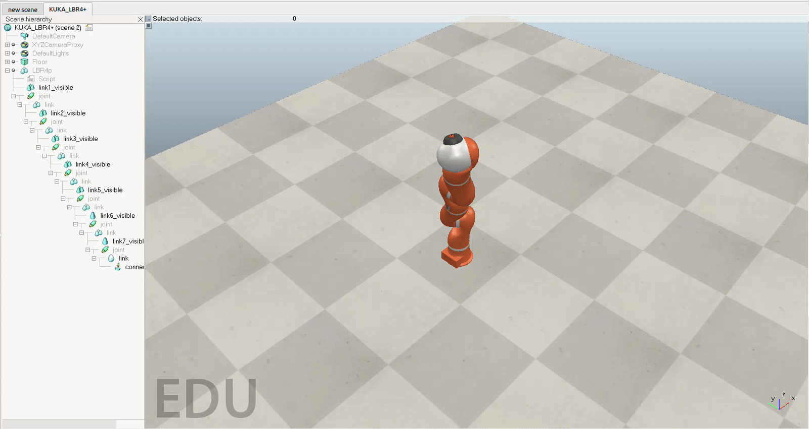

Modelisation3D
Modelagem cinemática e controle de um KUKA LBR4+ (7 eixos) em Octave. Inclui cinemática direta/inversa, Jacobiano e integração em tempo real com o CoppeliaSim.
Ver no GitHubDesenvolvedor | Robótica, Modelagem 3D e Programação

Modelagem cinemática e controle de um KUKA LBR4+ (7 eixos) em Octave. Inclui cinemática direta/inversa, Jacobiano e integração em tempo real com o CoppeliaSim.
Ver no GitHub
Um pequeno enxame de placas BBC micro:bit v2 sem líder. Cada uma segue uma regra local simples, e, com o tempo, o grupo inteiro acaba trabalhando em conjunto.
Ver no GitHub
Protótipo de jogo isométrico 2D
Classe: Protótipo
Nível: 5 (13 testes, build reproduzível)
Alinhamento: Neutro e Modular
Habilidades: Geração Procedural, FSM de 8 Direções, Upcast de Resolução
Fraqueza: Inimigos (ainda não implementados)
— Assinado: O Programador, responsável técnico pelo caos
Projeto de percepção computacional em C++.
Ver no GitHubProjeto de Programação Orientada a Objetos e Modelagem em C++.
Ver no GitHubMe encontre no GitHub